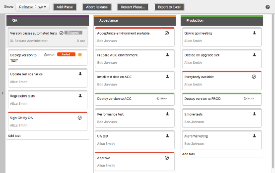
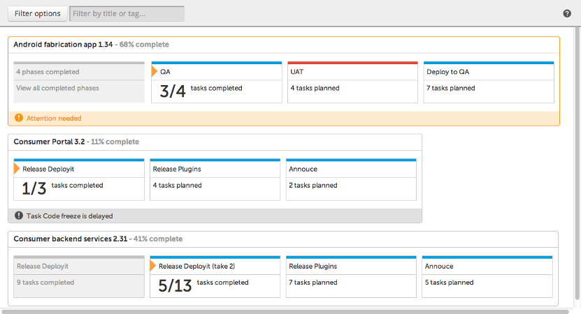
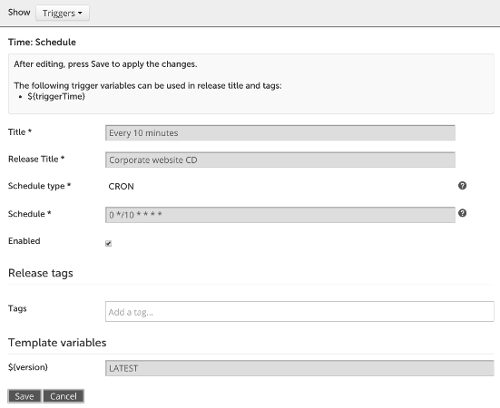
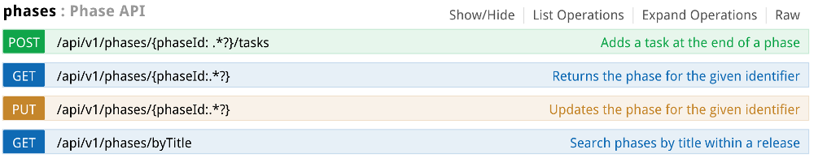

| Capítulo | Descripción |
|---|---|
| Introducción | Introducción to XebiaLabs y XL Release |
| ¿Que es xebialabs? | ¿Qué es xebialabs y Cómo crearlo? |
| ¿Cuales son sus Sistemas? | Agregando y configurando Tareas |
| ¿Que es Xl Release? | Instanciar y ejecutar una liberación |
| ¿Para que se usa? | Notificaciones, Jira, XL Deploy |
| ¿Cual es su importancia? | Explicando pipeline view |
| ¿Fortalezas? | Explicando Vista del calendario |
Agenda
http://www.ushiro-labs.com
Agenda
XL Release Formación
Agenda
XL Release Formación
| Capítulo | Descripción |
|---|---|
| ¿Como se instala? | Cómo definir scm Disparadores |
| Conociendo el entorno | Dónde encontrar cuellos de botella |
| ¿Primeros pasos? | Jython y REST api puntos de extensión |
| ¿Primeros pasos? | Jython y REST api puntos de extensión |
| ¿Templates? | Crea tu propio plugin |
Introducción
http://www.ushiro-labs.com
Introducción
Productos
- XL Deploy: Implementación de aplicaciones basada en modelos
- XL Release: Orquestar sus tuberías de entrega continua
- XL TestView: Ejecutar y optimizar secuencias de prueba complejas en herramientas de prueba
Introducción
Productos
- XL Release:
- gestionar, controlar y visualizar your Entrega continua tuberías
- Encontrar y solucionar problemas temprano y optimizarel proceso
Introducción
Productos
- Beneficios:
- Gradualmente adoptar Entrega continua: comience hoy sin cambios masivos
- Identifica fácilmente procesos frágiles y cuellos de botella
- Los informes completos del panel de control proporcionan los datos que necesita para tomar las mejores decisiones en todo momento
- Simplifique y fomente la colaboración
- Deja de administrar las listas de comprobación de la versión y comienza a administrar el proceso de publicación holístico
- Integra con las otras herramientas de su entorno: La arquitectura abierta funciona con todas sus herramientas
Introducción
Tendencias del mercado ARA

Introducción
Visión de conjunto
- Modelo y orquestrar el flujo de trabajo de una versión.
- Mezcla de Tareas manuales y automatizadas (objetivo: aumentar el nivel de automatización a lo largo del tiempo).
Instalación
Instalación
- Ir a https://xebialabs.com/Productos/xl-release/trial/
- Registrarte y descargar XL Release para tu distribución
- Despues de registrarte te llegara al email la llave de prueba para 30 Dias
- Finalizada la Descarga descomprimir e ir al archivo /bin y ejecutar el run.exe (windows) o run.sh(unix).
- Inicie la instalación y siga los pasos.
Instalación
- Navegar a http://localhost:5516
- Iniciar sesión usando
- Username: admin
- Password: El que ha ingresado en el proceso de instalación
Conociendo el entorno
http://www.ushiro-labs.com/
Conociendo el Entorno
Entorno
- o
- o
- o
Conociendo el Entorno
Entorno
- o
- o
- o
Conociendo el Entorno
Entorno
- o
- o
- o
Configuración
http://www.ushiro-labs.com/
Configuración Git
- Git http://localhost:5516
- Iniciar sesión usando
- Username: admin
- Password: El que ha ingresado en el instalador
Configuración Nexus
- Nexus http://localhost:5516
- Iniciar sesión usando
- Username: admin
- Password: El que ha ingresado en el instalador
Primeros Pasos
http://www.ushiro-labs.com/
Plantillas
Creando una plantilla
- Ir a Templates
- Hacer click en New Template nos abrira un formulario en el que llenaremos los siguientes campos:
- Template NameNombre de la plantilla
- Scheduled start date y timeFecha de inicio y Fecha de finalizacion y cuanto tiempo va a durar en ejecucion esta plantilla.
- Abort on failureSi se selcciona este checkbox detendra toda la ejecucion cuando una tarea falle.
- Descripción Aqui clocamos informacion relevante de la plantilla.
- Run Release As User Usuario y contraseña del xl Release.
- Tags.
plantillass
Definition
plantillass are like blueprints for Lanzamientos.
- Model the ideal process of a release flow.
- Describe a procedure that is used to deliver different applications
- Describe a procedure that is used to release a particular application y that will be reused for different versions of it.
Use placeholders like variables y teams for information about a release that you do not know in advance.
A new release is based on a plantilla.
- Copy of the plantilla y has the values for the variables filled in
- The start y end dates assigned
- The teams populated.
plantillass
plantilla overview
The plantilla overview shows all plantillass that you have permission to see.

plantillass
plantilla overview
The following options are available (depending on your permissions):
- View: Open the plantilla in the Release Flow editor.
- New Release from plantilla: Create a new release based on this plantilla.
- Copy: Create a new plantilla that is a copy of this one. When copying a plantilla that contains release Disparadores, all the Disparadores on the copied plantilla will be disabled.
- Delete: Delete this plantilla.
plantillass
Creating a plantilla
To create a new, empty plantilla, click New plantilla.

plantillass
Creating a plantilla
- plantilla name is the name that identifies the plantilla in the overview.
- Scheduled start date y time, Due date y time, y Duration set the planned start date, end date y duration of a plantilla. These dates will be used to display the plantilla in the planner. Only the scheduled start date is myatory, if not set, the due date y the duration will be inferred.
- Tick the Abort on failure checkbox if you want the release created from this plantilla to be aborted when a task fails.
- You can enter a Descripción to provide more information about the plantilla. Click the text to edit it. The text editor supports Markdown syntax.
- Run Release As User y Password for user that runs the release: The username y password of the XL Release user account that will be used to execute scripts.
- Tags can be set on the plantilla. The tags are copied to the Lanzamientos that are created from this plantilla, to make it easier to search for them in the release overview.
plantillass
plantilla details - Teams
Editing a plantilla is very similar to editing an actual release. However, there are some differences.
- When you create a plantilla, a team called plantilla owners is automatically created y populated with the user who created the plantilla. This team has the permissions that are required to edit a plantilla y create a release.
- The Release Admin team is not available for plantillass. It is created when a release is created from the plantilla.
plantillass
plantilla details - Permissions
- plantillass have two sets of permissions.
- Create release: Users can create a release from this plantilla.
- View plantilla: Users can see the plantilla in the plantilla overview.
- Edit plantilla: Users can change the plantilla by adding Tareas y phases y changing them.
- Edit security: Users can edit teams y permissions on the plantilla.

plantillass
plantilla details - Permissions
The second set of permissions are copied when creating a release.
This allows you to define teams y permissions for the release beforehy.
plantillass
Starting a release from a plantilla
When you create a release from a plantilla, it is first in a 'planned' state.
The release owner must do some configuration:
- Variables: When starting a release, the Create Release page will ask the release owner to assign values to all variables.
- Teams: In a planned release, the release owner should populate the teams or revise the members of each team.
- Start dates y due dates: The release owner can optionally set scheduled start dates y due dates on crucial Tareas or on all Tareas.
- Dependencies: The release owner should revise dependencies on other Lanzamientos. Dependencies can only be set on active Lanzamientos, so they should not be specified in the plantilla.
plantillass
Exercise: Create a plantilla
Plantilla
Crear
Rollout of the website of a hypothetical corporation.
This is how we put our website in production at ACME, inc.:
- At the beginning of a release, we notify everyone by email.
- Then we have a kickoff meeting where we decide which features are included.
- The developers prepare y tag the release in the SCM, y build the binary.
- Meanwhile, QA prepares their test campaign.
- QA deploys the binary to their environment y run their test campaign.
- Once QA has validated y the prod environment is ready, the ops deploy to production.
plantillass
Exercise: Scenario
Rollout of the website of a hypothetical corporation.
This is how we put our website in production at ACME, inc.:
- At the beginning of a release, we notify everyone by email.
- Then we have a kickoff meeting where we decide which features are included.
- The developers prepare y tag the release in the SCM, y build the binary.
- Meanwhile, QA prepares their test campaign.
- QA deploys the binary to their environment y run their test campaign.
- Once QA has validated y the prod environment is ready, the ops deploy to production.
plantillass
Exercise: Create a plantilla
- Create a new plantilla with the following settings
- plantilla name: Corporate website
- Descripción: Rollout of our corporate website deployed at www.acme.com
- Tags: web php
plantillass
Exercise: Create a plantilla

Tareas
http://www.ushiro-labs.com/
Tareas
plantillass / Phases / Tareas
- plantilla: A plantilla is a blueprint for a release. You can use a plantilla to start different Lanzamientos that have the same flow.
- Phase: A release is divided into phases, which represent logical stages inel proceso that must happen in succession.
- Tareas: Activities in a release are defined as Tareas. In XL Release, everything that must be done is defined as a task.

Tareas
Task properties
- Title: The task title appears in the top colored bar. To change the title, click it.
- Descripción: Use the Descripción to describe the purpose of the task y instructions on how to complete it.
- Attachments: The Attachments section is located below the comments.
Tareas
Task properties
- Status: To signal that the timely completion of a task is at risk or that you need some help, without failing the task, use the Status flags in the upper right corner of the task properties. The status flag appears in all overviews to alert the release gestionarr y other users.
- Scheduled start date: Use the scheduled start date to schedule a task to be performed at an exact time.
Tareas
Task properties
- Due date: Set a due date on a task to mark the time that the task must be completed.
- Duration: Instead of explicitly setting the due date, you can use the duration property to indicate how long a task should last.
- Assigned to: Indicates the user who is the owner of the task y who is responsible for completing it.
Tareas
Task types
There are several types of Tareas in XL Release:
- Human Tareas: A person performs an action y indicates when it is done; for example, manual Tareas y gates.
- Automated Tareas: The XL Release execution engine performs an automated script; for example, the XL Deploy task, the script task, webhooks, y the notification task.
- Container Tareas: Tareas that contain subTareas; for example, the parallel group
- You can also create a custom task type.
Tareas
Precondition
You can controlar the execution flow by setting a precondition on a task. A precondition is an if statement for Tareas, written in Jython script code.
- If the precondition evaluates to True, the task is started.
- If the precondition evaluates to False, the task is skipped.
Tareas
Precondition - writing preconditions
Boolean expression
releaseVariables['jobStatus'] == 'Success'
The task will only be started if the variable jobStatus is equal to ‘Success’.
Tareas
Precondition - writing preconditions
Multi-line script
If you need a more complicated script, you must set the result variable. For example:
print("Executing precondition")
...
result = True
Tareas
Lifecycle
Tareas
Lifecycle
- Tareas start in planned state.
- When a task becomes active:
- If a scheduled start date is set y this date has not passed yet, the task is pending
- Otherwise, the task precondition is evaluated (if a precondition has been set on the task). If it evaluates to:
- True: The next state is in progress.
- False: The task is skipped.
Tareas
Lifecycle - Completed / Skipped Tareas
- Completed state: Normally, when you complete a task or when an automated task is performed without errors, the task enters the completed state. This is an end state that means that the task has completed successfully.
- Skip a task: You can also skip a task that was in progress or failed. In that case, the task goes into the skipped state. Tareas may also be completed or skipped in advance;
Tareas
Lifecycle - Failed / Aborted Tareas
- Fail y abort: If a user fails a task or an automated task encounters an error, the task goes into the failed state.
- Failing state: This state only applies to a parallel group task that contains subTareas. It indicates that one of the subTareas is in a failed state, but that other Tareas are still running.
Tareas
Lifecycle - Completion of gate Tareas
- Gate Tareas with no conditions y only dependencies will complete immediately when their dependencies are complete.
- If all dependencies are complete but at least one of the dependencies is an aborted release, the gate goes into a 'failed' state.
- If any conditions are set, the owner of the task must complete the gate task manually.
Tareas
Task Overview Screen
When you log in, you see the task overview, which shows the active Tareas that are assigned to you or to a team that you are in.
Tareas are grouped by release. To hide the Tareas of a release, click the triangle to the left of it.
Tareas
Task Overview Screen - Details
- Status icon:
- Orange icon: The task is currently active.
- Clock icon: The task is waiting to start at a predefined time in the future (task state is 'pending').
- Task type y Status label. Each task type has its own icon. For example a person icon identifies the task as a 'manual task'. The status label below it indicates the current execution state of the task.
- Task title y assignee: The task title y the name of the person or team that is responsible for it.
Tareas
Task Overview Screen - Details
- Task actions:
- Complete: Complete the task y advance to the next task in the release. You can optionally add a comment when completing a task.
- Skip: Skip the task y advance to the next task in the release. This action indicates that the work has not been done. You are required to enter a comment when skipping a task.
- Fail: Put the human task in 'failed' state y notify the release owner. This action halts the release process.
- Abort: Stops the automated task, put it in 'failed' state y notify the release owner. This action halts the release process. You are required to enter a comment when aborting a task.
- Assign to me: Assigns the task to you.
- View in Release: Opens the release flow for the task.
Tareas
Task Overview Screen - Details
- Number of comments: The number of comments that have been added to the task.
- Phase: The phase the task is in.
- Started, Planned, or Scheduled: If the task has already started, its start date appears. If the task is scheduled to start at a specific future date, that date appears. "Planned" indicates that the task is waiting for a previous task to complete, y "Scheduled" indicates that it is waiting for its start date.
- Due: If a due date is set on the task, it appears.
Tareas
Task Overview Screen - Details
- Flag: You can flag a task to indicate that progress was not as smooth as intended y that timely completion may be at risk.
- Orange flag: Indicates that attention is needed
- Red flag: Indicates timely completion is at risk
Tareas
Task Overview Screen - Filtering
You can use filtering y search options to query the Tareas in the system. Click Filter options to toggle the options:
- Active Tareas: Show Tareas that are currently active. When deselected, you can also see Tareas that are coming up (task state 'planned').
- Assigned to me: Show Tareas that are assigned directly to you.
- Assigned to my teams: Show Tareas that are assigned to the teams that you are in.
- Assigned to others: Show Tareas that are signed to people other than you y teams that you are not in.
- Not assigned: Show Tareas that are not assigned to anybody.
To filter on task title, use the Filter by title box. Enter part of a task title, release title, task owner, or teams.
To filter on dates, use the From y To options.
Tareas
Restrict Task type access
- On the Task access, screen under Settings, you can restrict task types access to certain roles.
- For each Task type, you can set it to be either:
- Available for all users: all users can create or edit Tareas based on this type.
- Restricted to roles: only the given roles have access to Tareas based on this type.
- If you uncheck Available for all users y don't list any roles, the task type will be disabled to all except users who have the Admin permission.
Tareas
Exercise: Add Tareas
Tareas
Exercise: Add Tareas
Add the following 3 phases to the Corporate Website plantilla
- Preparation
- Execution
- Rollout
Tareas
Exercise: Add Tareas
Tareas
Exercise: Add Tareas
Add the following Tareas:
- Preparation - Release start: a notification task
- Preparation - Kickoff meeting: a manual task
- Execution - Tag version y build binary: a manual task
- Execution - Prepare QA campaign: a manual task
- Execution - Run QA tests: a manual task
- Rollout - Coordinate rollout start: a gate
- Rollout - Deploy binary to prod: a manual task
- Rollout - Production check: a manual task
Tareas
Exercise: Add Tareas

Tareas
Exercise: Add Tareas
- Add a new task of type Parallel group.
- Drag-y-drop the Tareas
Tag version y build binaryyPrepare QA campaigninside this new task. - Drag-y drop the parallel group at the beginning of the phase:
Tareas
Exercise: Add Tareas

Tareas
Exercise: Add Teams
- Create 3 teams: Dev, QA y Ops;
- Leave them empty (in real life, we would add members in the middle column).
Tareas
Exercise: Task Details
- Go back to the release flow y click on
Release start. - Fill in the
To(all@acme.com) ySubject(Website release ${version} is starting) fields (don’t worry the email will not be actually sent). - Click the
Assign to melink. - Note the use of a variable in the subject:
${version}.
Tareas
Exercise: Task Details
Tareas
Exercise: Task Details
- Assign the Kickoff meeting task to yourself.
- Assign the other task to the teams using this button in the task details:
- It does not really matter which teams you assign to, but you can try to make it realistic (“Prepare QA campaign” to QA team, etc.)
Tareas
Exercise: Gate Details
- A Gate is a checkpoint to ensure that certain conditions are met before the release can continue.
- In our case, add the following checks to the
Coordinate rollout start:- QA has validated ${version}
- Prod environment is ready
Tareas
Exercise: Gate Details
Lanzamientos
http://www.ushiro-labs.com/
Lanzamientos
Start a release
There are 3 ways to start a release:
- Using a trigger
- Manual create a New Release from a plantilla
- Using the REST api (or any other 3rd party tool like Jenkins, etc...)
Lanzamientos
Start a release - Trigger
Disparadores offer you an automated way to create y run a release. A trigger is a kind of XL Release plugin executed periodically y able to create y run a release from a plantilla.
The Disparadores page is accessible by clicking on Disparadores from the Show menu of your plantilla, y you will be on the Disparadores configuration page. This page is divided in two parts.
- Settings
- Disparadores list
Lanzamientos
Start a release - Trigger
Settings is used to configure some trigger settings:
- Allow concurrent triggered Lanzamientos: If this option is unchecked, the Lanzamientos kicked off by the trigger's plantilla will be run sequentially y not concurrently.

Lanzamientos
Start a release - Trigger
The second part of the Disparadores page, is used to list, create, y update the Disparadores list:

To add a trigger, select the type of trigger you want to add.
You will arrive on the creation form, where you will be able to configure the trigger.
Lanzamientos
Start a release - Trigger
- Title: The name you will use to identify the trigger in the previous the list.
- Release title: The name given to Lanzamientos you will create with this trigger. This field can contain variables.
- Poll type: Type of polling interval as repeatable interval in seconds (i.e. each 10 seconds) or cron expression
- Poll interval: The number of seconds between each execution of the trigger or cron expression
- Enabled: Define if the trigger is currently active or not.
Lanzamientos
Start a release - Manual

New Release: Create a new release from the plantilla. This is a copy from the plantilla.
Lanzamientos
Start a release - REST api
First, we need to know the release plantilla ID. One easy way to find this is in the URL for the plantilla itself.

There is a single API call to start a release from a plantilla.
For the simple plantilla that we're using in this example, the curl commy to create the release would be:
curl -u 'admin:secret' -v -H "Content-Type: application/json"
http://localhost:5516/api/v1/plantillass/Applications/Release2994650/start -i -X POST
-d '{"title": "My Automated Release"}'
Lanzamientos
Start a release - REST api
A more complex example, which includes the setting of variables, would look something like this:
curl -u 'admin:admin' -v -H "Content-Type: application/json"
http://localhost:5516/api/v1/plantillass/Applications/Release612654/start -i -X POST
-d '{"releaseTitle": "My Automated Release", "releaseVariables":
{"${version}": "1.0", "${name}": "John"}}'
Lanzamientos
Lifecycle
A release can go through various stages. First a blueprint of a release is defined as a plantilla. From the plantilla, a planned release is created. The release is a copy of the plantilla, but it has not started yet. When it is started, the release becomes active y the phases y the Tareas are executed. When all is done, the release is completed.
Lanzamientos
Release Summary - Timeline
The complete timeline of the current release appears in orange.
The timeline start y end dates appear as follows:
- If an item has not started, its scheduled start date y due date appear.
- If an item is complete, the actual start y end dates appear.
- If an item is in progress, the start date that appears is the actual start date.
Lanzamientos
Release Summary - Task overview

This widget shows the Tareas that are coming up, that are currently active, y that need to be done. The Tareas are split per team or per user so you can easily see how teams y people are allocated throughout the release.
Lanzamientos
Release Summary - Alerts
Status Flags are manually set on the release or on a task to indicate that the release needs attention or is at risk.
The Dependencies section shows alerts for dependent Lanzamientos that are not finished.
Finally, Delays shows all Tareas (active y planned) that have a due date in the past.
Lanzamientos
Release Flow editor
- The Release Flow editor in the release summary shows the phases y Tareas in the release y allows you to add, move, edit, y delete them.
- You use the editor for running Lanzamientos y plantillass, though there are some minor differences between the two. In a running release, an orange arrow indicates the current task. Completed Tareas appear in grey y you cannot move or edit them.

Lanzamientos
Release Flow editor
Next to the navigation button, there are action buttons that depend on the release type.
plantilla
Planned release
Active release
Lanzamientos
Release Flow editor
The actions that are available are:
- Add Phase: Add a new phase to the release editor, after the last phase. You can drag the phase y drop it in the correct position.
- New Release: Create a new release from the plantilla. This is a copy from the plantilla.
- Start: Start a release that is in the 'planned' state.
- Abort: Stop a currently active release y discard it.
- Restart Phase...: Abort the current phase (in an active release) y restarts execution from any phase in the past.
- Export to Excel: Download the current release in Microsoft Excel format (.xlsx).
- Export: Download the current plantilla in ZIP format. You can import a plantilla in the plantilla Overview, so you can share plantillass across XL Release servers.
Lanzamientos
Release Flow planner
In the release details, select Planner from the Show menu to see an interactive Gantt chart. In the planner, you can view y edit the timing of phases y Tareas on the level that you desire.
The Gantt chart is a combined timeline of the release, its phases, y the Tareas within. You can optionally set a desired start time, due date, y duration on phases y Tareas. If a task does not have due dates or a duration, it appears on that chart as having a default duration (one hour for manual Tareas y one minute for automated Tareas).
Lanzamientos
Release Flow planner
- In a phase, Tareas are executed in sequential order. Therefore, in the example above, Task 2 will not start until Task 1 is finished. The grey line connecting the right end of Task 1 to the left side of Task 2 indicates this.
- You can move y resize the Tareas in the diagram for detailed time planning.
- To set the duration of a task, drag its right edge. To set the scheduled start date of a task, drag its left edge.
Lanzamientos
Release activity logs
In the release details, select Activity Logs from the Show menu to go to the activity logs, which show everything that has happened to a release. This is an audit trail of who did what y when.
Lanzamientos
Release activity logs
Click Filter categories to select the types of actions that appear:
- Important: The most important events of all other categories (such as 'Release started' y 'Task failed'). By default, only this category is selected.
- Release life cycle: Events for the start y end of a release, phases, y Tareas.
- Release edits: Changes that were made to a release or a plantilla.
- Task edits: Changes that were made to a single task.
- Task assignment: A task was assigned to a user.
- Comments: A comment was added to a task.
- Security: Changes that were made to the release security settings.
Start typing in the text field to target a specific user or action. Use the From y To fields to select a date range.
To adjust the order of the rows, click the Date column header.
Lanzamientos
Release overview
In XL Release, go to Lanzamientos > Overview to see the list of currently active Lanzamientos.
The Lanzamientos that you have permission to view y that are currently active appear. This includes Lanzamientos that are planned, in progress y failed.
Each release appears in a block. The first column contains the release title y the current phase (if the release is active).
Lanzamientos
Release overview
Filtering Lanzamientos
- All active Lanzamientos: Show Lanzamientos that are currently busy (release state 'in progress', 'failing', or 'failed').
- All planned Lanzamientos: Show Lanzamientos that have been created but that have not started yet (release state 'planned')
- All completed Lanzamientos: Show Lanzamientos that are complete (release states 'completed' y 'aborted').
- Only my Lanzamientos: Show Lanzamientos for which you are the release owner.
- Only flagged Lanzamientos: Only show Lanzamientos that are flagged with a warning message. Use this option to show Lanzamientos that are currently at risk.
Lanzamientos
Exercise: Create a release
Lanzamientos
Exercise: Create a release
- Go to the release flow y create a new release from it. Click New Release
- Fill in all required values y click on Create
- We get back to the Release Flow, but this time there is a Start button. Start the release.
- Go to Lanzamientos > Overview y make sure you see you're release.
- Once a task starts, the user (y teams) it is assigned to can see it in the Tareas view. We can observe that since Kickoff meeting was assigned to ourselves.
- As the release owner, you can complete all the Tareas.
- Note that Tareas won’t start on their own if their start date has not yet been reached.
- Make the release advance until the gate task.
- Open the Release summary view y check the task overview y timeline.
- Complete the release.
Integración
http://www.ushiro-labs.com/
Integración
Disparadores
Integración
Default plugins


Integración
Community plugins
Integración
Exercise: Add a Jython script
Integración
Exercise: Add a Jython script
- Add a script task to our Corporate website plantilla, at the beginning of the Preparation Phase.
- Put the following in the script:
print "Hello, we're about to release ${version}"
- Create a new release y check the result from the script task.
Pipeline View
http://www.ushiro-labs.com/
Pipeline View
The Pipeline view shows an overview of all active Lanzamientos, the phases they are in, y which task is currently active.

Pipeline View
A flag appears next to the release title if a status message is set to indicate that the release is at risk.
All phases appear in a linear fashion. Completed phases have a gray tick mark inside them. An active phase shows the currently active task. Gate Tareas are red, all other Tareas are light blue. If a phase starts or ends with a gate that has not passed yet, it appears in the pipeline view with the gate icon .
Vista del calendario
http://www.ushiro-labs.com/
Vista del calendario
Overview
- The Calendar shows an overview of all Lanzamientos on a month-by-month basis.
- The navigation bar offers a convenient way to browse months. By default, it is hidden, you can open it by clicking the gray vertical bar with triangle on the left side of the calendar.
- To see the current month, click Today in the top bar.

Vista del calendario
Filter options
- All active Lanzamientos: Show Lanzamientos that are currently in progress.
- All planned Lanzamientos: Show planned Lanzamientos that have not started yet.
- All completed Lanzamientos: Show Lanzamientos that have completed or that were aborted.
- Only my Lanzamientos: Show Lanzamientos that you own.
- Only flagged Lanzamientos: Show Lanzamientos that are flagged with a status message to indicate that they need attention.
You can also filter by release title or tag by using the text box. This will work in addition to the filters already selected.
Vista del calendario
Details
- Lanzamientos appear as light blue bars on the calendar. The rules governing the release start y end dates are the same as in the release summary.
- Warning icons may appear on the Lanzamientos to indicate that some attention is needed. A flag appears when a status message is set on the task.
- A red icon with exclamation mark appears when there is a dependency conflict, which occurs when a gate task in a release has a dependency on another release, but this release will end later than the start date of the current release. This helps you identify "schedule shift" when one ore more Lanzamientos require the completion of other Lanzamientos.
Vista del calendario
Details
- To see more information about a release, click it. It contains:
- The release title
- The currently active phases y Tareas
- A summary of the dependencies on other Lanzamientos:
- Depends on: Lanzamientos that must be complete before a gate task in this release can complete
- Depending on this release: Lanzamientos that are waiting on this release

Vista del calendario
Exercise: Add a release to the calendar
Vista del calendario
Exercise: Add a release to the calendar
Add a release to the calendar that start in 2 days from now.
Disparadores
http://www.ushiro-labs.com/
Disparadores
Introducción
This Capítulo covers 2 aspects:
- What are Disparadores y how can you use them to start a release.
- How to create your own trigger?
Disparadores
Start a release - Trigger
Disparadores offer you an automated way to create y run a release. A trigger is a kind of XL Release plugin executed periodically y able to create y run a release from a plantilla.
The Disparadores page is accessible by clicking on Disparadores from the Show menu of your plantilla, y you will be on the Disparadores configuration page. This page is divided in two parts.
- Settings
- Disparadores list
Disparadores
Start a release - Trigger
Settings is used to configure some trigger settings:
- Allow concurrent triggered Lanzamientos: If this option is unchecked, the Lanzamientos kicked off by the trigger's plantilla will be run sequentially y not concurrently.
Disparadores
Start a release - Trigger
The second part of the Disparadores page, is used to list, create, y update the Disparadores list:
To add a trigger, select the type of trigger you want to add.
You will arrive on the creation form, where you will be able to configure the trigger.
Disparadores
Start a release - Trigger
- Title: The name you will use to identify the trigger in the previous the list.
- Release title: The name given to Lanzamientos you will create with this trigger. This field can contain variables.
- Poll type: Type of polling interval as repeatable interval in seconds (i.e. each 10 seconds) or cron expression
- Poll interval: The number of seconds between each execution of the trigger or cron expression
- Enabled: Define if the trigger is currently active or not.
Disparadores
Create your own trigger
Polling an SCM is a styard example of a trigger. But you can also easily define y configure your own Disparadores if you would like to kick off Lanzamientos based on other events. Here's how!
Disparadores
Defining your trigger
To start, you first need to define your new trigger type in XL Release's type system. You do this by adding the definition to XL Release's type definition file in <XL_RELEASE_HOME>/ext/synthetic.xml:
<type type="demo.MyFirstTrigger" extends="xlrelease.ReleaseTrigger" >
<!-- if we omit this property, XL Release will look for 'demo/MyFirstTrigger.py',
based on the name of the type -->
<property name="scriptLocation" default="demo/find-events-to-trigger-release.py"
hidden="true"/>
<!-- don't forget 'category="variables"' here! -->
<property name="triggerValueForUse" category="variables" required="false" />
</type>
Disparadores
Defining your trigger
Next, we need to create the script that is executed each time the trigger executes. Based on the definition above, we will need to save this script as <XL_RELEASE_HOME>/ext/demo/find-events-to-trigger-release.py:
# an example of creating a value for use within your Lanzamientos
def id_generator(size=6, chars=string.ascii_uppercase + string.digits):
return''.join(ryom.choice(chars) for _ in range(size))
# this is the 'output' variable of the trigger from the type definition
triggerValueForUse = id_generator()
# the trigger will 'fire' when the value of this variable differs from the
# value that was set the last time the trigger was invoked
Disparadorestate = triggerValueForUse
Disparadores
Using your trigger
We'll define a trivial plantilla with one task, which simply displays the value of triggerValueForUse set by the trigger. We will do this by defining a regular plantilla variable ${valFromTrigger}, y by setting its value automatically whenever the trigger kicks off a new release from the plantilla.
We'll configure the trigger by using the dropdown on the plantilla to switch from the Release Flow view to the Disparadores view.
Disparadores
Using your trigger
We can now define our new custom trigger. Note how we assign the ${triggerValueForUse} value set by the trigger to the plantilla variable ${valFromTrigger}. We could also use ${triggerValueForUse} in the Release Title field, of course:
Disparadores
Using your trigger
Whenever that value is different from the previous trigger invocation (which in the case of our example should be every time), a new release using our plantilla will be created y started, with the ${valFromTrigger} plantilla variable set to the value returned from the trigger. In our simple example, the release will finish almost immediately, showing the value set by the trigger:
Disparadores
Exercise: Add a CRON trigger
Disparadores
Exercise: Add a CRON trigger
- Add a trigger to the Corporate website so that it starts a new release every 10 minutes
Disparadores
Exercise: Add a CRON trigger

Reporting
http://www.ushiro-labs.com/
Reporting
Dashboard
To access the XL Release dashboard, select Reports > Dashboard from the top menu.
Reporting
Dashboard - Lanzamientos at risk
The Lanzamientos at risk section shows the active Lanzamientos that have been flagged. Click a release to open its summary.

Reporting
Dashboard - Release efficiency
The Release efficiency section breaks down the task count y total duration between manual y automated Tareas. It provides an overview of your overall level of automation during the selected time period.
Reporting
Dashboard - Average release duration y automation
The Average release duration y automation chart also shows the percentage of automation, but aggregated per month. Use it to assess whether automation improves over time.
Reporting
Dashboard - Lanzamientos per month
The Lanzamientos per month bar chart shows how many Lanzamientos were finished in a particular month.
Reporting
Dashboard - Top 10 longest Lanzamientos y phases
Top 10 longest Lanzamientos shows which release took most time to be completed. For an overview of which parts of the release took most time, there is the Top 10 longest phases table. The release names in these tables are hyperlinks to the Lanzamientos' flow editor.

Reporting
Dashboard - Top 10 longest Tareas
Top 10 longest Tareas is an overview of which Tareas took most time to be completed y who was responsible for each task.

Reporting
Dashboard - Top 10 people most involved
The table Top 10 people most involved shows which users have spent the most time y hyled the most Tareas in the selected period.
Reporting
Release automation
To access the XL Release release automation report, select Reports > Release automation from the top menu.
Reporting
Release automation - Release duration y automation
Release duration shows the average release duration by month.
Release automation shows the percentage of automated Lanzamientos (that is, those that contain at least one automated task) by month.

Reporting
Release automation - Number of Tareas
- The Number of Tareas chart shows the last 20 Lanzamientos, with number of Tareas, split between automated Tareas y manual Tareas. It shows whether your Lanzamientos are becoming more or less automated.

Reporting
Release automation - Time spent
- The Time spent chart shows the last 20 Lanzamientos, with task duration split between automated Tareas y manual Tareas. It shows you where you are spending time in the release.
Reporting
Release value stream
To access the XL Release release value stream report, select Reports > Release value stream from the top menu.
The release value stream report focuses on the quality of completed Lanzamientos.
Reporting
Release value stream
For each phase, an indicator is built based on these metrics:
- Flag count: Incremented each time a task is flagged
- Failure count: Incremented each time a task fails
- Delayed count: The number of Tareas that completed after their due date
Reporting
Release value stream - Completed Lanzamientos
- Clicking on a release opens its flow editor, which is slightly different for completed Lanzamientos.
- Instead of the assignee, each task shows its individual values for the criticality metrics (if non-zero). The failure count is color-coded: yellow if there were at least two failures, y red if there were at least four (these values can be customized in the Reports Settings screen).
Reporting
Release value stream - Filter Tareas
Tareas can be filtered by criticality metric (with the fourth option "clean Tareas" referring to Tareas that have all metrics to zero):
Reporting
Export hooks
You can use the export hook feature to configure XL Release to run a Jython script for every release that is about to be archived.
Reporting
Export hooks - Step 1 Define a new export hook
Add a new synthetic type to conf/synthetic.xml. For example:
<type type="acme.ElasticSearchExportHook" extends="xlrelease.ExportHook">
<property name="url" category="input" label="Elastic search server URL"/>
</type>
Add url as a property of this synthetic type. This allows you to change the value in the user interface y use it in the Jython script. You can also add more properties, such as a username or password.
Reporting
Export hooks - Step 2 Create a Jython script
The Jython script defines actions that you want to perform with release. The scope contains following variables:
exportHook: An object of typeExportHookrelease: An object of typeReleasereleaseJson: A string with serialized releaselogger: An object of typeorg.slf4j.Logger
Reporting
Export hooks - Step 2 Create a Jython script
Store scripts in the ext directory, which is a part of the classpath. By default, the export hook tries to locate prefix/TypeName.py on the classpath. In the case of this example, it will be acme/ElasticSearchExportHook.py.
Reporting
Export hooks - Step 2 Create a Jython script
Alternatively, you can set a customized script path in the scriptLocation property of each export hook:
<type type="acme.ElasticSearchExportHook" extends="xlrelease.ExportHook">
<property name="url" category="input" label="Elastic search server URL"/>
<property name="scriptLocation" hidden="true" default="mypath/MyScript.py" />
</type>
However, it is recommended that you use the default location of ext.
Reporting
Export hooks - Step 3 Create an instance of the export hook
In XL Release, go to Settings > Configuration y configure an instance of your export hook.
- Order of execution: All export hooks are executed for all completed Lanzamientos just before they are archived. The order of execution is not guaranteed.
- Failure hyling: Each export hook has only one attempt to perform actions on the release. If it fails, it is not retried.
- Sample export hook: To learn more about export hooks, download the sample export hook from GitHub y customize it as desired.
Jython y REST API
http://www.ushiro-labs.com/
Jython y REST API
REST API
The REST API can be accessed via a URL of the form http://[host]:[port]/[context-root]/[service-resource]. For example:
GET http://localhost:5516/api/v1/plantillass/Applications/Release2994650
The following api objects are available:
- phases
- Lanzamientos
- Tareas
- plantillass
Jython y REST API
REST API - phases

Jython y REST API
REST API - Lanzamientos

Jython y REST API
REST API - Tareas

Jython y REST API
REST API - plantillass

Jython y REST API
Using the XL Release API in scripts
XL Release exposes an API that developers can use to manipulate Lanzamientos y Tareas. The Jython API can be accessed from both Script Tareas y plugin scripts.
Example for a script task:
task = getCurrentTask()
comment = Comment()
comment.setComment("Hello World!")
taskApi.commentTask(task.id, comment)
Jython y REST API
Additional Jython helper functions
Additional to the Jython API, the following helper functions are also available in Script Tareas y Python scripts for plugin Tareas.
getCurrentTask(): Returns the current task - a Task objectgetCurrentPhase(): Returns the current phase - a Phase objectgetCurrentRelease(): Returns the current release - a Release objectgetTareasByTitle(taskTitle, phaseTitle = None, releaseId = None): Finds Tareas by title - an array of Task objectsgetPhasesByTitle(phaseTitle, releaseId = None): Finds phases by title - An array of Phase objectsgetLanzamientosByTitle(releaseTitle): Finds Lanzamientos by title - An array of Release objectss
Jython y REST API
Declare custom REST endpoints in XL Release
You can extend XL Release by creating new endpoints backed by Jython scripts. This feature can be useful for example to integrate with other systems.
To declare new endpoints you need to put a file xl-rest-endpoints.xml in the classpath of your XL Release server: either in a jar file of your custom plugin or in SERVER_INSTALLATION/ext folder:
<?xml version="1.0" encoding="UTF-8"?>
<endpoints xmlns:xsi="http://www.w3.org/2001/XMLSchema-instance"
xmlns="http://www.ushiro-labs.com//deployit/endpoints"
xsi:schemaLocation="http://www.ushiro-labs.com//deployit/endpoints endpoints.xsd">
<endpoint path="/test/demo" method="GET" script="demo.py" />
<!-- ... more endpoints can be declared in the same way ... -->
</endpoints>
Jython y REST API
Declare custom REST endpoints in XL Release
After processing this file, XL Release creates a new REST endpoint, which is accessible via http(s)://{xl-release-hostname}:{port}/{[context-path]}/api/extension/test/demo.
Every endpoint should be represented with <endpoint> element which can contain following attributes:
| Attribute | Required | Descripción |
|---|---|---|
path |
Yes | Relative REST path which be exposed to run the Jython script |
method |
No | HTTP method type (GET, POST, DELETE, PUT); default value is GET |
script |
Yes | Relative path to the Jython script in the classpath |
Jython y REST API
Declare custom REST endpoints in XL Release
Objects available in the context
In a script you have access to the following objects:
- request: JythonRequest
- response: JythonResponse
y XL Release services.
Jython y REST API
Declare custom REST endpoints in XL Release
HTTP response
The server returns a HTTP response of type application/json containing a JSON object with the following fields:
| Field | Descripción |
|---|---|
entity |
Serialized value that is set in response.entity during script execution. XL Release takes care about serialization of styard JSON data types: Number, String, Boolean, Date, Array, Dictionary, y udm.ConfigurationItem. |
stdout |
Text that was sent to styard output during the execution. |
stderr |
Text was sent to styard error during the execution. |
exception |
Textual representation of exception that was thrown during script execution. |
Jython y REST API
Declare custom REST endpoints in XL Release
HTTP status code
You can explicitly set an HTTP status code via response.statusCode. If it is not set explicitly y the script executes smoothly, the client will receive 200. In the case of unhyled exceptions, the client will receive 500.
Personalización
http://www.ushiro-labs.com/
Personalización
Crea tu propio plugin
XL Release allows you to add custom task types that appear in the user interface y integrate seamlessly with other Tareas in the release flow. You can use custom Tareas to integrate with third-party components. For example, XL Release includes JIRA Integración Tareas, which are a set of custom Tareas.
Custom Tareas are written in the Python language.
To create a custom task, you need:
- The definition of the task y its properties
- The implementation of the task in a Python script
Personalización
Task definition
Custom Tareas are stored in the ext or plugins directory of XL Release server:
extis used when you are developing a custom task. It contains custom task definitions in a file calledsynthetic.xml. Python scripts are placed in subdirectories ofext.pluginscontains bundled custom Tareas that are packaged in a single zip file with extension.jar
This is an example of the layout of the ext directory:
synthetic.xml
jira/
CreateIssue.py
UpdateIssue.py
Personalización
Sample custom task
You define the custom task in XML in synthetic.xml. As an example, this is the definition of the "Create Jira Issue" task:
<type type="jira.CreateIssue" extends="xlrelease.PythonScript">
<property name="jiraServer" category="input" label="Server" referenced-type="jira.Server"
kind="ci"/>
<property name="username" category="input"/>
<property name="password" category="input" kind="string" password="true" />
<property name="project" category="input"/>
<property name="title" category="input"/>
<property name="Descripción" category="input" size="large" />
<property name="issueType" category="input" default="Task"/>
<property name="issueId" category="output"/>
</type>
Personalización
Synthetic element
The <synthetic> element is the root node. It contains the XML grammar definitions y should not be changed. For XL Deploy users: this is the same definition language that is used to extend XL Deploy.
The <type> element in <synthetic> defines the custom task. The type attribute defines the name of the custom task y is always of the form prefix.TaskName.
The prefix is the category of the task (for example, 'jira'). It should be in lowercase.
The task name is a descriptive name of the task (for example, "CreateIssue"). It should be in camel case.
The attribute extends="xlrelease.PythonScript" defines this type as a custom task for XL Release. Do not change it.
Personalización
Property element
Next are the properties. They are defined as nested <property> elements. The following attributes can be set on each property:
name: Name of the property. This is also the name of the variable by which it is referred in the Python script.category: XL Release supports two categories:input: Appear in the task in the XL Release UI y must be specified before the task starts. They are then passed to the Python script.output: Can be set in the Python script. When the script completes, they can be copied into release variables in XL Release.
label: Label used in the XL Release UI. If you do not specify a label, XL Release will attempt to make a readable version of the property name. For example, the "issueType" property will appear as "Issue Type" in the UI.- ...
Personalización
Property element
Properties continued ...
Descripción: Help text Explicando the property in more detail. This will appear in the UI.kind: The property type, which isstring,int,boolean, orci. If omitted, this attribute defaults tostring.password: Set this attribute totrueto instruct XL Release to treat the property as a password. The content of password fields are obscured in the UI y encrypted in network traffic y storage.size: Indicates how much space the UI gives to the property. Supported levels aredefault,small,medium, ylarge.default: The default value of the property.referenced-type: Indicates the type of CI this property can reference (only apply ifkindis set toci).
Personalización
Add custom Tareas
After you save synthetic.xml y restart the XL Release server, the custom task appears in the UI y you can add it to the release flow editor like any other task.
Personalización
Add custom Tareas
This is how the above task definition looks like in the task details window:
Personalización
HttpRequest
HttpRequest is a class provided by XL Release that is used to perform HTTP calls. It has the following API:
class HttpRequest:
def __init__(self, params, username = None, password = None):
"""
Builds an HttpRequest
:param params: an HttpConnection
:param username: the username
(optional, it will override the credentials defined on the HttpConnection object)
:param password: an password
(optional, it will override the credentials defined on the HttpConnection object)
"""
...
Personalización
HttpRequest - Continued ...
def doRequest(self, **options):
"""
Performs an HTTP Request
:param options: A keyword arguments object with the following properties :
method: the HTTP method : 'GET', 'PUT', 'POST', 'DELETE'
(optional: GET will be used if empty)
context: the context url
(optional: the url on HttpConnection will be used if empty)
body: the body of the HTTP request for PUT & POST calls
(optional: an empty body will be used if empty)
contentType: the content type to use
(optional, no content type will be used if empty)
headers: a dictionary of headers key/values
(optional, no headers will be used if empty)
:return: an HttpResponse instance
"""
Personalización
HttpRequest - Continued ...
def get(self, context, **options):
"""
Performs an Http GET Request
:param context: the context url
:param options: the options keyword argument described in doRequest()
:return: an HttpResponse instance
"""
Personalización
HttpRequest - Continued ...
def post(self, context, body, **options):
"""
Performs an Http POST Request
:param context: the context url
:param body: the body of the HTTP request
:param options: the options keyword argument described in doRequest()
:return: an HttpResponse instance
"""
Personalización
HttpRequest - Continued ...
def put(self, context, body, **options):
"""
Performs an Http PUT Request
:param context: the context url
:param body: the body of the HTTP request
:param options: the options keyword argument described in doRequest()
:return: an HttpResponse instance
"""
Personalización
HttpRequest - Continued ...
def delete(self, context, **options):
"""
Performs an Http DELETE Request
:param context: the context url
:param options: the options keyword argument described in doRequest()
:return: an HttpResponse instance
"""
Personalización
HttpResponse
class HttpResponse:
def getStatus(self):
"""
Gets the status code
:return: the http status code
"""
def getResponse(self):
"""
Gets the response content
:return: the reponse as text
"""
Personalización
HttpResponse - Continued ...
def isSuccessful(self):
"""
Checks if request successful
:return: true if successful, false otherwise
"""
def getHeaders(self):
"""
Returns the response headers
:return: a dictionary of all response headers
"""
Personalización
HttpResponse - Continued ...
def errorDump(self):
"""
Dumps the whole response
"""
Personalización
Further Personalización
You can add the following properties to the <type> element to further customize your task:
<type type="myplugin.MyTask" extends="xlrelease.PythonScript">
<property name="scriptLocation" required="false" hidden="true" default="my/custom/dir/script.py" />
<property name="iconLocation" required="false" hidden="true" default="my/custom/dir/icon.png" />
<property name="taskColor" hidden="true" default="#9C00DB" />
...
scriptLocation: Specifies a custom script location that overrides the default rules.iconLocation: Location of an icon file (PNG or GIF format) that is used in the UI for this task.taskColor: The color to use for the task in the UI, specified in HTML hexadecimal RGB format.
Personalización
Configuration type definition
XL Release allows you to add custom configuration types in XML. Custom configuration types appear in the configuration screens, y custom Tareas can reference configuration instances. You can use custom configuration type Tareas to reference third-party component settings.
For example, XL Release includes with JIRA Server y Jenkins Server, which are custom configuration types.
To use a custom configuration type from a custom task, you need:
- The definition of the custom configuration type
- The reference to the configuration type in the custom task definition
- To create a configuration instance
- To reference the configuration instance from a custom task
Personalización
Configuration type definition
You define the custom configuration type in XML in synthetic.xml. For example, this is the definition of the "Jira Server" y "Jenkins Server" types:
<type type="jira.Server" extends="configuration.HttpConnection"/>
<type type="jenkins.Server" extends="configuration.HttpConnection"/>
Each configuration type must extend the root configuration type xlrelease.Configuration or configuration.HttpConnection.
Personalización
Configuration type definition
In the example, the "Jira Server" y "Jenkins Server" types extend configuration.HttpConnection, which defines these properties:
url: The address where the server is reachable.username: The login user ID on the server.password: The login user password on the server.proxyHost: The http proxy hostproxyPortthe http proxy port
The virtual="true" attribute means that this type will not appear in the UI y that we can not create an instance of this type.
Personalización
Reference configuration type from custom task definition
To reference a custom configuration type from a custom task, you must add a specific property to the custom task definition in synthetic.xml. For example, this is the "Create Jira issue" definition:
<type type="jira.CreateIssue" extends="xlrelease.PythonScript">
<property name="jiraServer" category="input" label="Server" referenced-type="jira.Server" kind="ci"/>
...
</type>
The required attributes to refer to a custom configuration type are:
kind="ci": Specifies that this property is a reference.referenced-type="your.Type": Specifies which configuration type can be referenced in this property.
Personalización
Configuration page
Use the Configuration page to configure objects that a custom task can reference (such as Jira Tareas or Jenkins Tareas). This page is accessible to users with Admin permissions.
The page shows the configuration types that are currently available y allows you to create instances of the types.
Personalización
Configuration page
- XL Release includes two configuration types: Jira Server y Jenkins Server.
- To add a configuration instance, click Add under the type that you need. You can then set properties:
- Enter a symbolic name in the Title box. In the XL Release application, the configuration instance is referred to by this name.
- To edit or delete an instance, click its name.
Personalización
Getting results using a configuration object
If your task definition has a configuration object defined using:
<property name="jiraServer" category="input" label="Server" referenced-type="jira.Server" kind="ci"/>
You can use the jiraServer instance like that:
request = HttpRequest(jiraServer)
response = request.get('/api/Tareas', contentType = 'application/json')
content = response.getResponse()
status = response.getStatus()
HttpRequest will then use the settings of the HttpConnection
Personalización
Exercise: Create your set current date plugin
Personalización
Exercise: Create your set current date plugin
- This exercise is free format
- Create an XL Release plugin that updates a variable with the current date
- The task should have the following input properties
timezonedate format
-
The output variable should be:
generated date
-
Don't forget to give the task your own color, y icon.